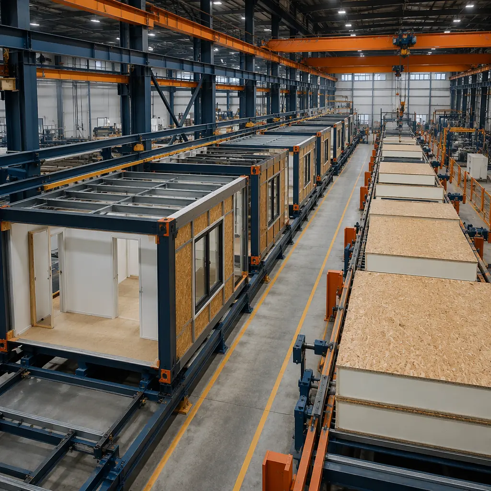
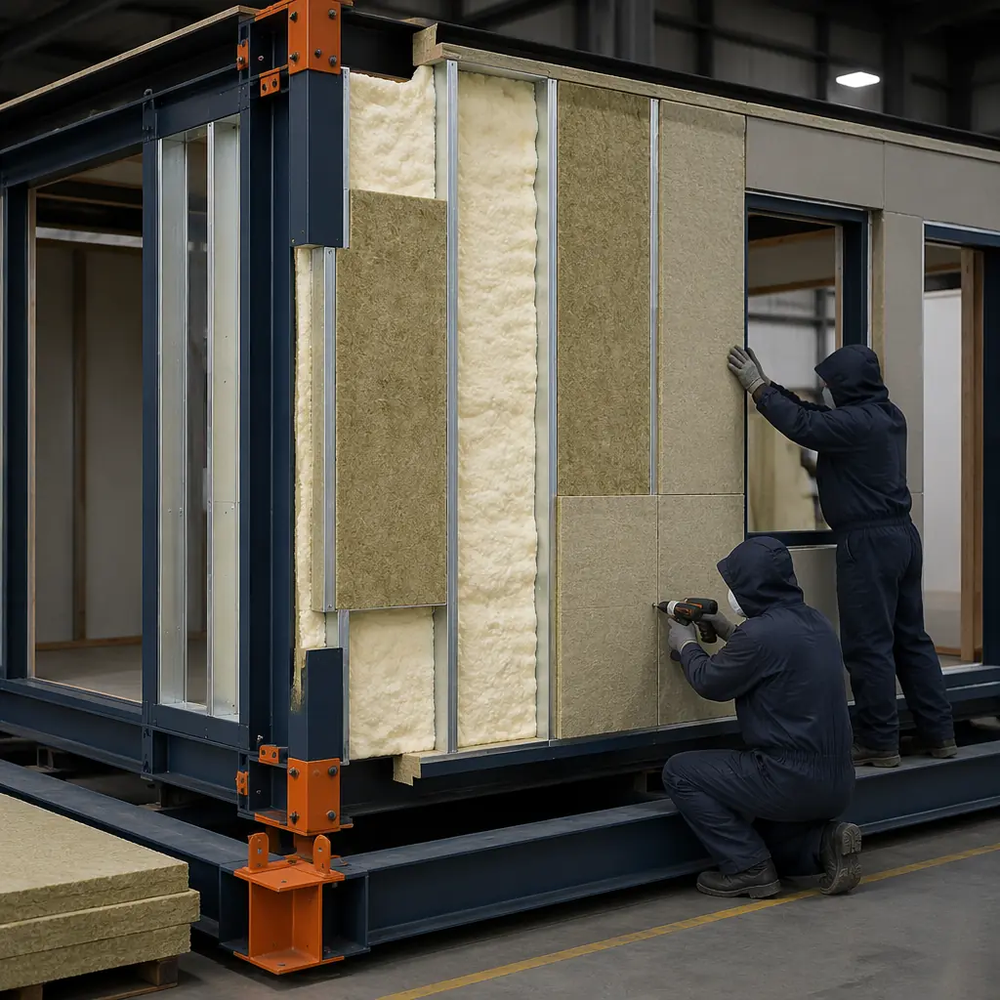
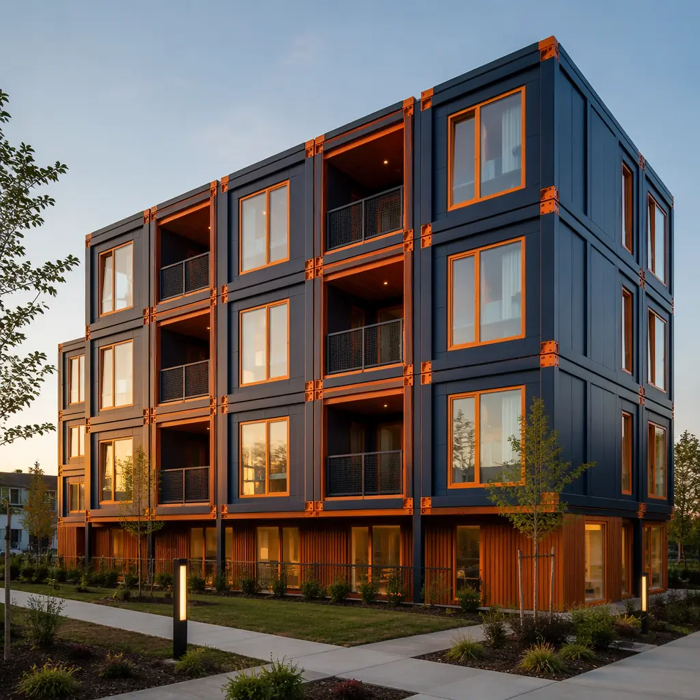
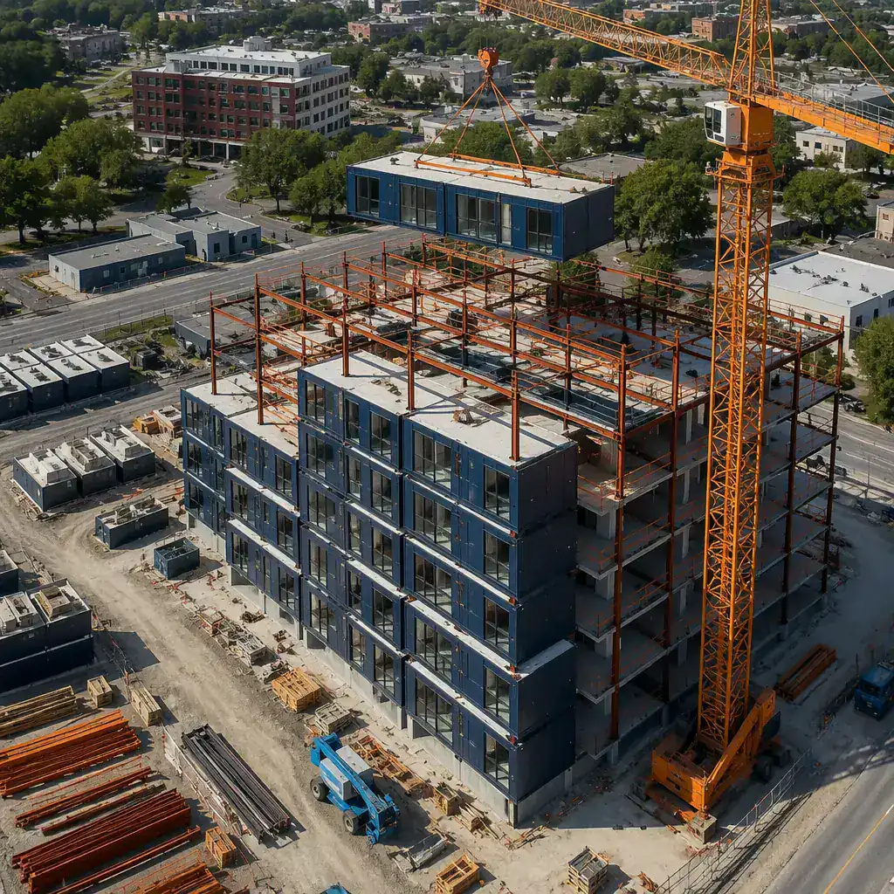

Developers evaluating off-site construction face a genuine choice: volumetric modular — where entire room-sized modules are fabricated, finished, and transported to site — or structural insulated panels (SIPs), where factory-made sandwich panels are assembled on-site into the building shell. Both methods promise speed and quality advantages over traditional stick-built construction, but they deliver those advantages through fundamentally different mechanisms. Choosing the wrong one for your project type, site conditions, or budget structure can erase the efficiency gains you sought. This article provides a data-driven comparison across the four dimensions that determine project success: speed, cost, energy performance, and design flexibility.

Understanding the Two Methods — Volumetric Modules vs Structural Panels
Volumetric modular construction fabricates complete three-dimensional building sections — typically 12–16 feet wide, 40–70 feet long, and 10–12 feet tall — inside a factory. Each module arrives on site with interior finishes, MEP (mechanical, electrical, plumbing) rough-ins, windows, and sometimes even fixtures and cabinetry already installed. The on-site work consists of craning modules onto the foundation, connecting the inter-module utilities, and completing corridor and roof finishes. A 60,000 sq ft building might require 40–60 modules, and the on-site assembly phase can be completed in 4–8 weeks.
SIP construction fabricates flat structural panels — typically an insulating foam core (EPS, XPS, or polyurethane) sandwiched between two oriented strand board (OSB) facings — in a factory. These panels, usually 4–8 feet wide and up to 24 feet long, are shipped flat-packed to the construction site, where a crew erects them into walls, floors, and roof assemblies. The panels interlock via embedded timber splines or cam-lock connectors. Interior finishes, MEP systems, windows, and doors are all installed on-site after the shell is erected. A 60,000 sq ft SIP building requires 800–1,200 panels, and on-site assembly of the shell typically takes 6–12 weeks, followed by 3–5 months of interior fit-out.
The fundamental distinction: volumetric modular maximizes factory completion (80–90% factory, 10–20% site) while SIP construction splits the work roughly 30–40% factory, 60–70% site. This ratio drives almost every other difference between the two methods — from the logistics cost profile to the construction financing structure.
| Characteristic | Volumetric Modular | SIP Construction |
|---|---|---|
| Factory completion | 80–90% | 30–40% |
| Transport unit | 3D module (12'×40–70'×12') | Flat panel (4–8'×24'×4–12") |
| On-site shell erection | 4–8 weeks | 6–12 weeks |
| Interior fit-out on site | 2–4 weeks (connectors only) | 12–20 weeks (full MEP/finishes) |
| Max practical height | 6–12 stories (steel frame) | 3–4 stories (panel bearing) |
| Crane dependency | Heavy (80–150 ton mobile crane) | Light (telehandler or small crane) |
Speed to Occupancy — The Cash Flow Argument
For developers carrying construction financing at 7–10% interest, every month of reduced construction time is real money. This is where the volumetric modular advantage is most dramatic — and most easily quantified.
A 60,000 sq ft mid-rise building (4 stories, mixed-use or residential) delivered via volumetric modular achieves occupancy in 6–9 months from foundation pour. The same building using SIP construction typically requires 10–14 months — an additional 4–5 months on site for interior fit-out that volumetric modular completes in the factory. At a construction loan of $12 million at 8%, those 5 extra months cost approximately $400,000 in carrying costs alone, before accounting for the 5 months of lost rental or sales revenue.
However, the speed equation shifts for smaller or simpler buildings. A 15,000 sq ft single-story commercial building — where the SIP shell can be erected in 2–3 weeks and interior fit-out is straightforward — may see a much narrower gap. SIP's lower factory lead time (panels can be manufactured in 3–5 weeks versus 8–14 weeks for volumetric modules) partially offsets the longer on-site phase. For projects under 20,000 sq ft, the total timeline difference between volumetric modular and SIP narrows to 2–3 months, and the decision often comes down to cost and logistics rather than speed alone.
This timeline advantage compounds when considered alongside the broader modular vs traditional construction comparison — where modular's 30–50% schedule reduction over stick-built dwarfs the narrower gap between modular and SIP.
Cost Breakdown — Where the Money Goes
The cost comparison between modular and SIP is not a single number; it is a profile that shifts depending on project scale, site location, and labor market conditions. Understanding where each method concentrates cost allows developers to match the method to their budget structure.
| Cost Category | Volumetric Modular | SIP Construction | Winner |
|---|---|---|---|
| Factory fabrication | $85–130/sq ft | $18–28/sq ft (panels only) | SIP (lower factory cost) |
| Transport to site | $4–8/sq ft (oversize loads) | $1–3/sq ft (flat-pack, standard trucks) | SIP (cheaper logistics) |
| Crane & site equipment | $3–5/sq ft (heavy crane, 4–8 weeks) | $0.50–1.50/sq ft (telehandler) | SIP |
| On-site MEP/finishes labor | $15–25/sq ft | $45–70/sq ft | Modular |
| Financing cost (carrying) | $4–7/sq ft | $7–12/sq ft | Modular (shorter duration) |
| Total (60,000 sq ft building) | $145–195/sq ft | $130–175/sq ft | Narrow gap; depends on local labor |
The headline takeaway: SIP construction appears cheaper on a per-square-foot basis in regions with low on-site labor costs. But in high-cost labor markets — major coastal metros, remote sites, or anywhere skilled MEP trades are scarce — the modular advantage in reduced on-site labor can flip the equation. In markets where electricians and plumbers bill at $120–180/hour, eliminating 60–70% of on-site MEP labor through factory integration closes the cost gap entirely, and the 4–5 month schedule advantage becomes pure upside.
The ROI calculation is explored in depth in our modular construction ROI guide, which models the full financial picture including accelerated revenue from earlier occupancy.
SIP construction manufactures the building shell in a factory. Volumetric modular manufactures the building. The difference in factory completion percentage — 35% vs 85% — is the difference in on-site labor exposure, schedule certainty, and weather risk. Developers who treat these as interchangeable methods are leaving money on the table.
Energy Performance — The Thermal Envelope Showdown
Both SIPs and volumetric modular construction deliver substantially better thermal performance than traditional stick-built methods. But they achieve it through different mechanisms, and the real-world performance delta can be significant.
SIPs excel at panel-level thermal performance. A typical 6.5-inch SIP with a polyurethane foam core achieves R-26 to R-28 for the panel itself, with near-zero thermal bridging within each panel because the foam core is continuous. The challenge is at the joints — where two SIPs meet at a corner, floor-to-wall transition, or roof-to-wall connection. These interfaces require site-applied sealants, splines, and tapes, and the performance of these joints depends entirely on the installation crew's attention to detail on that specific day.
Volumetric modular construction attacks the thermal envelope at the module level. Each module's six sides are insulated as a complete assembly in the factory, with insulation materials — closed-cell spray foam at R-6.5 to R-7.0 per inch, or rigid mineral wool hybrid systems at R-26 to R-30 — installed under controlled conditions. As documented in our modular building energy efficiency analysis, factory-installed insulation achieves its specified R-value without the 10–15% performance degradation common in field-applied spray foam. The module-to-module joints are engineered with integrated thermal breaks — compressible gaskets, offset stud alignments, and insulated mating surfaces — that are tested at the factory, not improvised on site.
The performance gap shows up most clearly in blower door testing. SIP buildings typically achieve 2.5–4.5 air changes per hour at 50 Pascals (ACH50) when installed by experienced crews — excellent compared to the 5–8 ACH50 of traditional construction. But volumetric modular buildings routinely test at 1.5–3.0 ACH50, with MODURA's last 50 projects averaging 1.8–2.5 ACH50. That delta of 1.0–2.0 ACH50 translates to approximately $8,000–$15,000 per year in additional HVAC energy costs for a 50,000 sq ft building — compounding across the 30+ year building lifecycle.

Design Flexibility — When Each Method Hits Its Limits
Neither modular nor SIP construction is universally flexible. Both impose constraints that designers must work within, and the wrong choice for a given architectural program leads to expensive workarounds.
Where SIPs win on flexibility: SIP construction shines in projects with complex roof geometries, large open spans, and buildings where the structural grid varies across floors. Because SIP panels are cut to order using CNC routing tables in the factory, custom angles, curves, and openings are relatively straightforward — the constraint is the 4×24 foot panel dimension, not the shape within it. SIPs also adapt more easily to irregular or constrained sites where maneuvering 70-foot modules is impractical. For single-family custom homes, small commercial pavilions, and buildings on tight urban infill lots, SIPs offer design freedom that volumetric modular cannot match.
Where modular wins on flexibility: Volumetric modular construction excels in repetitive, multi-unit programs — the very programs where SIP assembly becomes monotonous and inefficient. A 120-unit modular apartment building with eight unit types repeated across 12 stories plays directly to modular's strength: design once, fabricate many. The module dimensions constrain the architectural module, but within that module, the interior configuration can vary as much as stick-built construction allows. For modular office buildings, the steel frame typically provides 30–40 foot clear spans within each module — more than adequate for open-plan layouts, private offices, or hybrid configurations.
The height ceiling marks another inflection point. SIP buildings are typically limited to 3–4 stories because the panels themselves serve as the bearing structure — the foam core has limited compressive strength compared to steel. Modular construction with a steel frame can reach 6–12 stories without a secondary structural system, and with a concrete or steel podium, 20+ stories is achievable. For mid-rise and high-rise projects, the conversation effectively ends at the structural engineer's desk: SIPs are not an option.
For developers considering hybrid approaches — SIP shells with modular interiors, or modular cores with SIP extensions — the complexity and cost of managing two supply chains and two installation crews typically erases any theoretical advantage. The practical wisdom from 500+ projects is to pick one method and commit to it, as we've seen across the full spectrum of modular and precast concrete comparisons as well.

Project Selection Framework — Which Method for Which Project
Rather than declaring one method universally superior, the right question is: which method matches your specific project profile? The decision matrix below synthesizes the four comparison dimensions into actionable guidance:
| Project Characteristic | Best Fit | Why |
|---|---|---|
| 4+ stories, 40,000+ sq ft, multi-unit | Volumetric modular | Steel frame handles height; repetition pays off; schedule advantage largest |
| 1–3 stories, <20,000 sq ft, custom design | SIP | Lower transport cost; panel flexibility suits custom layouts; lighter equipment |
| Remote site, scarce skilled labor | Volumetric modular | Minimizes on-site labor; see remote workforce housing for examples |
| Tight urban infill, restricted access | SIP | Flat-pack delivery fits constrained sites; no 70-ft module maneuvering |
| High-cost labor market | Volumetric modular | Factory labor replaces expensive on-site trades; schedule savings compound |
| Extreme climate, high-performance envelope | Volumetric modular | Better ACH50 performance; factory-tested thermal breaks at module joints |
| Industrial/warehouse, large clear spans | Volumetric modular | Steel frame delivers 40–60 ft spans; industrial modular excels here |
| Sustainability/LEED priority | Volumetric modular | 70% less waste; easier LEED certification; factory-controlled material management |
For the majority of commercial mid-rise projects — apartments, hotels, offices, senior living, student housing — volumetric modular delivers the stronger overall package: faster occupancy, better energy performance, less weather exposure, and more predictable costs. The SIP advantage is real but narrower, concentrated in smaller-scale projects where on-site complexity is manageable and the logistics cost of transporting 70-foot modules would be disproportionate.
A final note on the construction industry's direction of travel: the skilled labor shortage affecting every developed economy is structural, not cyclical. The US construction industry is short approximately 500,000 workers as of 2026, with the shortage concentrated in the electrical, plumbing, and finishing trades that SIP construction depends on for 60–70% of its project hours. Volumetric modular's strategy — shift those hours into a factory where automation, standardized processes, and a stable workforce can absorb them — is not just a cost play. It is a risk mitigation strategy against the industry's most persistent constraint.
